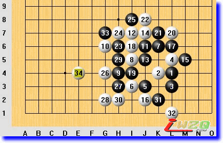
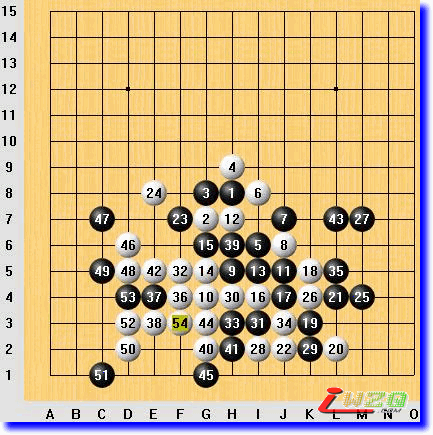
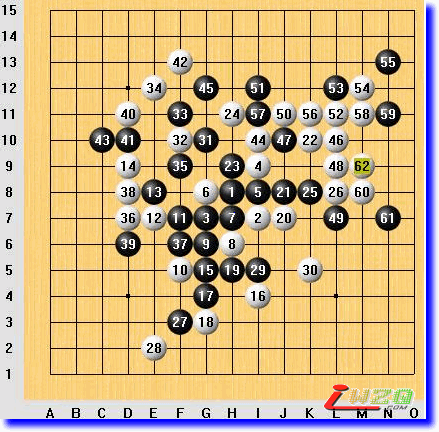
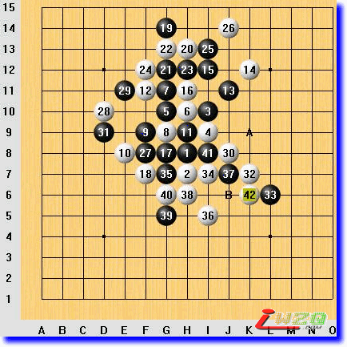

图说棋理（基础知识）
#1 图说棋理（基础知识） 作者：有志青年 发表时间：2008-9-7 12:56:44
清风[图说棋理]五子棋知识帖子目录 ShowPost.asp?ThreadID=4541
图说棋理（基础知识一）新规则

最近网络上五子棋新规则搞得如火如荼，并新建了“自由棋对战平台”（www.freewzq.com）。
所谓新规则，就是带有三手交换规定的无禁手传统五子棋（相对于“现代五子棋”——连珠）的规则,具体来讲就是：第一位棋手（假先手方）先在棋盘任意地方摆出二黑一白三颗棋子，然后由第二位棋手（假后手方）选择执黑或者执白，假先手方必须无条件接受，然后先白后黑轮流落子，首先在直线或斜线上形成五颗或五颗以上同色棋子相连棋形的一方获胜。
这是“交换一（一次交换）”规则，可以平衡开局但容易落入假先手方的研究，如果举办比赛，还有更为完善的“交换二”规则，与“交换一”规则的不同之处就是假后手方多出一种选择，那就是可以在假先手方摆出的三颗子的基础上，在棋盘任意位置再加上一黑一白两颗棋子，然后由假先手方选择执黑执白，自己无条件接受。
还有第三种规则——3+4规则，由假先手方在棋盘任意位置摆出二黑一白三颗子棋，由假后手方在这三颗子棋的基础上在棋盘任意位置添加二黑二白四颗棋子，然后由假先手方选择执黑执白，也可以要求对方再任意添加四颗子，自己选择执黑执白。选定后，白方先行，胜负判断标准和前述一致。
刚接触新规则的爱好者不妨先实践“交换一”规则。新规则提倡使用19路棋盘。如果玩儿指定开局三手交换规则的五子棋，边角开局中有很多平衡开局可以使用。
（初学者了解新规则，可以不看下面的实战解析，因为里面用到了一些术语，以后我会讲解给朋友们）
我在qq游戏无禁高分区实践了一盘边角开局，我执黑，与新规则不同的是第二手棋是由对方下的，因为qq游戏无禁手房间没有交换功能，这盘棋我假先方也就成了真先方，执黑了。因为我在实践新规则，所以第三手棋没有走出黑优，尽量使前三手棋平衡。
白6 i3 的意图很明确，就是要把黑棋封锁在角落里。我必须得向外走，于是黑7K6马步布八卦。对方似乎也对八卦很敏感，立刻在 i5 占据阵点并形成双二。我一看有些吃惊，感觉我有些轻敌了！
这时候我想了一会儿，算是半个长考吧，然后下了这个黑9H4。对方的10G6居然也对我使起了小马步，我很担心，我的多数子力都在角落，对方多数子力在外面，照这样下去我要吃亏！于是一狠心J6做了个一子三活二！本想对方会在 i6 活三，然后是几手交换，没想到对方下在了 i7，看来对方执意要封锁我了。
我感觉形势对我比较不利了，就想先消耗自己的活二资源来转化为防守力量，下了J5活三。这时候想起来有人曾经说过：“布局阶段先活三的一方往往会处于劣势”，现在的确是这样了。
对方出乎我意料的应招竟然这么多！白14J7挡！
这时候我很想下L6，再和对方交换，但是看到交换后自己落后手，经过充分思考，想到了一个交换后不落后手的办法，就是先下M5叫一步，然后再交换。
接下来完全按照我的规划下到了黑21。白22是个错误，因为黑棋在角落里有个VCF！我当时因为感到自己被封锁的这么死，一心想改变被封锁的局面，居然也没有发现这个VCF！下了H6做杀，本想对方会挡中间H5，对方却在H7反做杀！我很紧张，感觉局势大大不妙，但我知道我有连续冲四的防守手段，对方两三步内杀不掉，于是黑25老老实实地 i8 防守。
对方的26我不知道是否看到了我的防守手段，很快地在下在了G4，局部棋形上看是个绝杀。我连续冲四后下了黑33G7，这时候被封锁的局面基本打破，这时候对方突然投下34E4认负了！我想可能是认为我有VCF不走是故意的吧，或者是一看胜利暂时无望就不想费劲了也未可知。
欢迎大家对新规则和任意开局发表自己的意见。
#2 图说棋理（基础知识二）VCF 作者：有志青年 发表时间：2008-9-7 12:57:55

VCF是英文Victory of Continuous Four的缩写，是五子棋中引入的英文名称，即利用连续冲四，最终形成双冲四或活四而取胜。VCF的步数有多有少，步数少的，做出来比较容易，防守方也容易看出来并会实施防守措施阻止进攻方VCF的实现；步数多的，做出来较困难，防守方也不容易发现，就可能发生对先后手判断的错误。我们来看一盘棋。
这盘棋黑27做棋，目的是以K8、L7、M6三点来取胜。这时候白棋没有去防守，连续使用追手（活三及活三以上级别的进攻手段）猛攻到第38手，黑棋H6防守之后，牵制了白棋32-36的活二，白棋不能再连续使用追手来进攻了，于是开始做棋。这时候要注意，因为黑方已经有L7点的双三取胜手段了，白方做棋只能做高于活三进攻级别的棋。白40G2，做出了F2点的冲四活三和H2、G3两步的VCF。两步，很短了，黑方也就很容易发现了。由于这两个杀法都用到了22-28-40这个眠三，所以黑棋防守这个眠三是对的。本来白棋已经没杀，但是白方想考验一下对方的计算力，42做棋在了E5，这是一个6步VCF的做棋，黑方没有及时发现，黑43L7双活三进攻，白棋实施VCF取胜。
#3 图说棋理（基础知识三）VCT 作者：有志青年 发表时间：2008-9-7 12:58:32

VCT是英文Victory of Continuous Three的缩写，是五子棋中引入的英文名称，即利用连续不断地活三、冲四（其中至少要有一步是活三），直至最终形成双三、四三或双四取得胜利。和VCF一样，VCT的步数有多有少，步数少的，做出来比较容易，防守方也容易看出来并会实施防守措施阻止进攻方VCF的实现；步数多的，做出来较困难，防守方也不容易发现，就可能发生防守方向判断上的错误。我们来看一盘棋。
黑37 F6，之后黑方没有连续进攻手段。白棋38D8活三，黑39D6防守，这时候白方走出了一个相当长的（12步）VCT。如果黑方计算出了这个VCT，39防守D10就能阻止这个VCT的实现（当然，那样白棋的优势还是很大的，但需要做棋了，不能直接VCT了）。
#4 图说棋理（基础知识四）一子双杀“双示” 作者：有志青年 发表时间：2008-9-7 12:59:20

“一子双杀”是指一步棋同时形成两个冲四活三叫杀点的基本杀法，即“双示”（一步棋相对于两个局部都是示招）。我们用实战对局来说明。
棋行至白40，白棋形成I6、I8两处冲四活三，但这步棋不是一子双杀，因为这两个冲四活三共用同一个眠三，这是同一个局部，所以黑棋只要防这个眠三，白棋的两个冲四活三就都不存在了。
如果黑棋防守I6，白棋从H5、H4可以实施VCF，所以40这手棋已经是“一示一含”了，相对于4、34、36、40、2（或38）来讲，是示招；相对于10、18、40、2、38、36、32来讲，是含招，这说明白40这步棋的进攻级别一经是第二级，而且是两路，所以黑棋不能防了，所能采取的办法只能是实施更高一级的进攻，那就是I8冲四。
黑37I8冲四后，白42防守，同时形成A、B点的“双示”，这即是“一子双杀”。黑棋无法防守了。
注意：虽然H5、H4的杀法还存在，但白棋不能算是三杀，因为白棋B点的冲四活三和H5、H4的杀法共用36、32这一个活二。